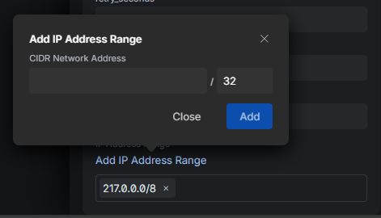

UniFi Talk Repo
This is a small collection of UniFi Talk templates, some of which have already been integrated into Talk as templates.
This site is not affiliated with Ubiquiti in any way.
Select a template to view the configuration.
Unfortunately, only a very small part of the SIP protocol is standardized, and there are many
standards, so virtually every provider does what they want.
So even a single provider usually has several standards.
How to debug?
Debugging telephony servers
However, it is possible to build a suitable template based on the log. To do this, you must log
in to the console via SSH and attach to the telephony server (FreeSwitch) using the
fs_cli -r -R command.
It is important to note that in current Talk versions, the FreeSwitch server restarts every time a change is made, which means you will be logged out of the console.
Analyze SIP Frames
The sngrep tool is very useful for visualizing SIP frames. However, it is not
installed on the console by default and can be installed with apt install sngrep.
Inbound Calls not working?
If inbound calls do not work, it is usually because the host name of the provider's telephony server is not whitelisted as an ACL.
You can find the ACL hostname in fs_cli when you receive a call.
SIP Response Codes
Here is a list of SIP response codes: Wikipedia
First, you need to create a fork of this repository.
Click here to create a fork.
Then you can push a new JSON template. You can use the existing templates as a guide. When you're done, just start a pull request.

If you are interested, I will gladly forward your template to the appropriate department at UI so that it eventually can be implemented.
However, the template must then be validated by UI for accuracy and functionality, which is why we need you and your connection.
The whole process works as follows:
- You invite “unifitalk@ui.com” as an admin for UniFi Talk on your console.
- You tell me the Name of your console (don't worry, I can't do anything with it, it's just for clarity for the UI developers).
- Ubiquiti will contact you either by email or on the official UI forum, whichever you prefer.
- In the penultimate step, UI may install a custom Talk version that only you and the developers have.
- Finally, UI will make a few calls (to toll-free numbers, of course; you can also specify preferred numbers) to verify that the template actually works before it is released.
If you have concerns, Ubiquiti may provide a console for testing so that you don't have to do it on the main console.
You can contact me on the Unofficial Community forum: ubiquiti-networks-forum.de, the Official Ubiquiti forum: community.ui.com or you just open an issue on GitHub.
I accept no liability for damage or loss, as I am merely referring you to UI. I always recommend making a backup.